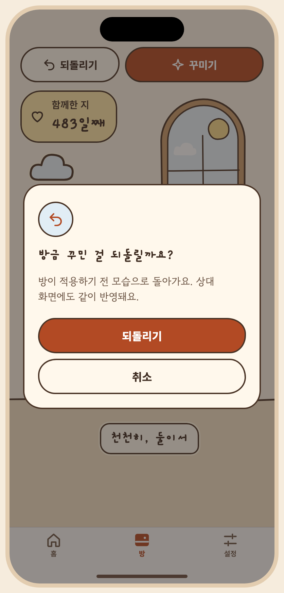

# S10 되돌리기 — 열린 대화 안에서만 승인자: 미승인 승인일: 미정 ## 목적, ID, 경로 ID: S10 Route: /prompt (dialog) ## 디자인 원본 - [S10-undo.dc.html](../../../canvas/project/S10-undo.dc.html) ## 이미지 - [S10-confirm__ios-day-light-ko.png](../../../exports/S10-confirm__ios-day-light-ko.png) ## 상태와 상호작용 - **캔버스 보드**: `S10-undo` - **목적**: 점유자가 지금 열린 프롬프트 대화에서 방금 만든 변경을 취소하고 바로 앞 미리 보기로 돌아가요(없으면 현재 방 보기). 확인, 진행, 성공(점유는 그대로), 되돌릴 변경 없음, 상대 점유 중, 늦은 중복 요청(서버 충돌), 실패. - **이동**: S09의 "이전 미리 보기로 되돌리기" → 확인 다이얼로그 → 같은 미리 보기 화면. - **적용한 뒤에는 되돌릴 수 없어요.** 되돌리기는 아직 적용하지 않은 변경에만 있고 방 도구 막대에는 되돌리기 버튼이 없어요. 다시 적용(redo)도 없어요. - 되돌려도 점유와 대화는 그대로 이어져요(점유를 풀지 않아요). 되돌릴 수 있는 만큼은 이 대화에서 만든 미리 보기까지예요. - 되돌리기는 점유자만 할 수 있어서 상대가 점유 중이면 이유와 함께 막혀요. - **긴 문구·언어 사례**: 다이얼로그 본문은 3줄까지 늘어나요. | 상태 ID | 설명 | 사용하는 키 | 그린 조합 | |---|---|---|---| | `S10-confirm` | 되돌리기 확인 (이 대화 안에서만) | `preview.changes` `preview.changes.list` `preview.badge` `preview.view.current` `preview.view.candidate` `preview.undo` `preview.applyHint` `preview.apply` `preview.cancel` `a11y.pose.wave_main` `a11y.mascot` `date.since` `a11y.dday` `dday.eyebrow` `dday.count` `prompt.title` `prompt.mine` `a11y.presence` `undo.title` `undo.body` `undo.confirm` `common.cancel` | iOS·낮·밝게·ko, Android·밤·어둡게·ko, iOS·낮·밝게·en, Android·밤·어둡게·ja 외 4 | | `S10-progress` | 되돌리는 중 | `preview.changes` `preview.changes.list` `preview.badge` `preview.view.current` `preview.view.candidate` `preview.undo` `preview.applyHint` `preview.apply` `preview.cancel` `a11y.pose.wave_main` `a11y.mascot` `date.since` `a11y.dday` `dday.eyebrow` `dday.count` `prompt.title` `prompt.mine` `a11y.presence` `undo.progress` | iOS·낮·밝게·ko, Android·밤·어둡게·ko | | `S10-done` | 성공 · 바로 앞 미리 보기로 (점유는 그대로) | `preview.changes` `preview.changes.list` `preview.badge` `preview.view.current` `preview.view.candidate` `preview.undo` `preview.applyHint` `preview.apply` `preview.cancel` `a11y.pose.wave_main` `a11y.mascot` `date.since` `a11y.dday` `dday.eyebrow` `dday.count` `prompt.title` `prompt.mine` `a11y.presence` `undo.done.title` `undo.done.body` | iOS·낮·밝게·ko, Android·밤·어둡게·ko | | `S10-none` | 되돌릴 변경 없음 (적용한 방은 되돌릴 수 없음) | `preview.view.current` `preview.view.candidate` `preview.undo` `preview.applyHint` `preview.apply` `preview.cancel` `a11y.pose.wave_main` `a11y.mascot` `date.since` `a11y.dday` `dday.eyebrow` `dday.count` `prompt.title` `prompt.mine` `a11y.presence` `undo.none.title` `undo.none.body` `common.confirm` | iOS·낮·밝게·ko, Android·밤·어둡게·ko | | `S10-busy` | 상대가 점유 중 · 되돌릴 수 없음 | `preview.changes` `preview.changes.list` `preview.badge` `preview.view.current` `preview.view.candidate` `preview.undo` `sample.partner` `preview.partner.wait` `preview.partner.readonly` `preview.applyHint` `preview.apply` `preview.cancel` `a11y.pose.wave_main` `a11y.mascot` `date.since` `a11y.dday` `dday.eyebrow` `dday.count` `prompt.title` `prompt.partner` `a11y.presence` `undo.busy.title` `undo.busy.body` `common.confirm` | iOS·낮·밝게·ko, Android·밤·어둡게·ko, iOS·낮·밝게·en, Android·밤·어둡게·ja | | `S10-conflict` | 늦은 중복 요청 · 서버 충돌 안전 상태 | `preview.changes` `preview.changes.list` `preview.badge` `preview.view.current` `preview.view.candidate` `preview.undo` `preview.applyHint` `preview.apply` `preview.cancel` `a11y.pose.wave_main` `a11y.mascot` `date.since` `a11y.dday` `dday.eyebrow` `dday.count` `prompt.title` `prompt.mine` `a11y.presence` `undo.conflict.title` `undo.conflict.body` `common.confirm` | iOS·낮·밝게·ko, Android·밤·어둡게·ko, iOS·낮·밝게·en, Android·밤·어둡게·ja | | `S10-error` | 되돌리기 실패 | `preview.changes` `preview.changes.list` `preview.badge` `preview.view.current` `preview.view.candidate` `preview.undo` `preview.applyHint` `preview.apply` `preview.cancel` `a11y.pose.wave_main` `a11y.mascot` `date.since` `a11y.dday` `dday.eyebrow` `dday.count` `prompt.title` `prompt.mine` `a11y.presence` `undo.err.title` `undo.err.body` `common.retry` `common.cancel` | iOS·낮·밝게·ko, Android·밤·어둡게·ko | ## 이동 및 뒤로 F03: S07 → S08 → S09 → 적용 후 S07; S09 → S10 → 이전 미리보기; 필요 시 S12 동의. 뒤로: 대화/시트 또는 확인을 닫고 이전 단계로. 취소 시 방은 유지. ## 접근성 상태 표에 나열된 `a11y.*` 키를 스크린 리더 이름으로 사용합니다. 공통 접근성 및 200% 글자 규칙은 [interaction notes](../../../interaction-notes.md#10-접근성-상호작용)를 참조하세요. TODO: 해당 상태에 명시되지 않은 역할과 이름을 확인하세요. ## 수락 시나리오 - [ ] S10-AC-01: 열린 대화 안에서 되돌리면 이전 미리보기로 돌아가고 방은 바뀌지 않는다. ## 열린 질문 / 추적 TODO: 명세에 없는 disabled/offline 상태의 적용 여부와 정확한 뒤로 대상을 확인하세요. 시나리오와 요구사항·테스트·실행 결과는 [추적표](../../traceability.md)에 연결하세요.
| Key | 한국어 | English · draft G4 | 日本語 · draft G4 |
|---|---|---|---|
| a11y.dday | 함께한 지 {n}일째, 2025년 6월 29일부터 | Day {n} together, since June 29, 2025 | 一緒に過ごして{n}日目、2025年6月29日から |
| a11y.mascot | 아루미, {pose} | Aroomi, {pose} | アルーミ、{pose} |
| a11y.pose.wave_main | 인사하고 있어요 | waving | 手を振っています |
| a11y.presence | 꾸미기 상태: {state} | Decorating status: {state} | 飾り付けの状態：{state} |
| common.cancel | 취소 | Cancel | キャンセル |
| common.confirm | 확인 | OK | OK |
| common.retry | 다시 시도 | Try again | もう一度試す |
| date.since | 2025년 6월 29일부터 | since June 29, 2025 | 2025年6月29日から |
| dday.count | {n}일째 | Day {n} | {n}日目 |
| dday.eyebrow | 함께한 지 | Together | 一緒に過ごして |
| preview.apply | 적용하기 | Apply | 反映する |
| preview.applyHint | 적용하면 두 사람의 방이 바뀌고, 적용한 뒤에는 되돌릴 수 없어요. | Applying changes the room for both of you, and it can't be undone once applied. | 反映するとふたりの部屋が変わり、反映した後は元に戻せません。 |
| preview.badge | 미리 보기 · 아직 적용되지 않았어요 | Preview · not applied yet | プレビュー · まだ反映されていません |
| preview.cancel | 취소 | Cancel | キャンセル |
| preview.changes | 변경 내용 | Changes | 変更内容 |
| preview.changes.list | 쿠션 · 조명 · 별 추가 | Added a cushion, a lamp and a star | クッション・ランプ・星を追加 |
| preview.partner.readonly | 지금은 보기만 할 수 있어요 | You can only watch for now | 今は見ることだけできます |
| preview.partner.wait | {name}님이 적용할지 정하고 있어요 | {name} is deciding whether to apply it | {name}さんが反映するか決めています |
| preview.undo | 이전 미리 보기로 되돌리기 | Go back to the previous preview | 前のプレビューに戻す |
| preview.view.candidate | 미리 보기 | Preview | プレビュー |
| preview.view.current | 현재 방 | Current | 今の部屋 |
| prompt.mine | 내가 꾸미는 중 | You're decorating | あなたが飾っています |
| prompt.partner | {name}님이 꾸미는 중 | {name} is decorating | {name}さんが飾っています |
| prompt.title | 함께 꾸미기 | Decorate together | いっしょに飾る |
| sample.partner | 하루 | Haru | ハル |
| undo.body | 이 대화에서 방금 만든 변경을 취소하고 바로 앞 미리 보기로 돌아가요. 방은 아직 바뀌지 않았어요. 적용한 방은 되돌릴 수 없어요. | This drops the change you just made in this conversation and goes back to the preview before it. The room hasn't changed. A room you already applied can't be undone. | この会話で作ったばかりの変更を取り消し、ひとつ前のプレビューに戻ります。部屋はまだ変わっていません。反映した部屋は元に戻せません。 |
| undo.busy.body | {name}님만 이 미리 보기를 되돌릴 수 있어요. | Only {name} can undo this preview. | このプレビューを元に戻せるのは{name}さんだけです。 |
| undo.busy.title | {name}님이 꾸미는 중이에요 | {name} is decorating | {name}さんが飾っています |
| undo.confirm | 되돌리기 | Undo | 元に戻す |
| undo.conflict.body | 최신 미리 보기를 불러왔어요. 필요하면 다시 되돌려 주세요. | We loaded the latest preview. Undo again if you still need to. | 最新のプレビューを読み込みました。必要であればもう一度元に戻してください。 |
| undo.conflict.title | 이미 되돌려졌거나 미리 보기가 바뀌었어요 | It was already undone, or the preview changed | すでに元に戻されたか、プレビューが変更されました |
| undo.done.body | 바로 앞 미리 보기예요. | This is the preview before it. | ひとつ前のプレビューです。 |
| undo.done.title | 되돌렸어요 | Undone | 元に戻しました |
| undo.err.body | 미리 보기는 그대로예요. 다시 시도해 주세요. | The preview is unchanged. Please try again. | プレビューはそのままです。もう一度お試しください。 |
| undo.err.title | 되돌리지 못했어요 | Couldn't undo | 元に戻せませんでした |
| undo.none.body | 이 대화에서 만든 변경이 아직 없어요. 이미 적용한 방은 되돌릴 수 없어요. | There are no changes from this conversation yet. A room you already applied can't be undone. | この会話で作った変更はまだありません。すでに反映した部屋は元に戻せません。 |
| undo.none.title | 되돌릴 변경이 없어요 | Nothing to undo | 元に戻せる変更がありません |
| undo.progress | 되돌리는 중이에요 | Undoing | 元に戻しています |
| undo.title | 이전 미리 보기로 되돌릴까요? | Go back to the previous preview? | 前のプレビューに戻しますか？ |